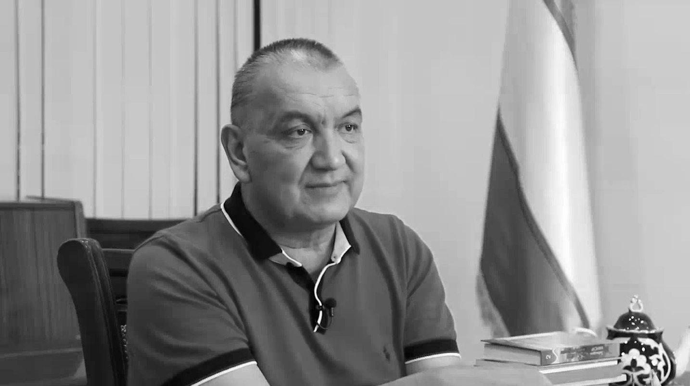

Скончался народный артист Узбекистана Мирза Азизов В возрасте 58 лет ушел из жизни директор театра драмы и комедии им. Мукими Мирза Азизов.
Сегодня, 16 апреля, в возрасте 58 лет скончался народный артист Узбекистана, директор Государственного музыкального театра драмы и комедии им. Мукими Азизов Мирза Мамаджанович. Об этом сообщили в Министерстве культуры. Мирза Азизов был известен как артист музыкального театра. Он исполнял такие знаменитые роли, как Фараон в «Юсуфе и Зулайхо», Бахром в «Фархаде и Ширин», Мадалихан в музыкальной драме «Нодирабегим», Алпомыш в спектакле «Возвращение Алпомыша».